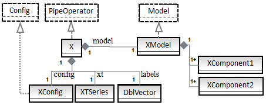

Scala for Machine Learning - Implementation guide
Overview
The source code is provided by the author for the sole purpose of illustrating the concepts and algorithms presented in "Scala for Machine Learning". It should not be used to build commercial applications.
Some of the syntactic style and design patterns used throughout the book are described in the Preface, Chapter 1/Source code/Presentation and Appendix/Source code.
The "Scala for Machine Learning" source follows most of the guidelines defined in the Effective Scala - M. Eriksen-Twitter
Source code style and format
Editor
. Tab indentation: with 2 blank space/characters
. Margin: 100 characters.
. Line wrap: 2 indentations
Scaladoc
. The source comments complies with the Scaladoc tag annotation guideline
Organization of imports
. Imports are defined in top of the source file and grouped in the following order [Scala standard library, 3rd party libraries, Scala for Machine Learning imports]
import scala. ... // Scala standard library
import org.... // Third party libraries
import org.scalaml... // Scala for Machine Learning imports
Collections
. Some collection such as Set or Map are defined as mutable and immutable classes in Scala standard library. These classes are differentiated in the code by their package.
import scala.collection._
..
val myMap = new mutable.HashMap[T, U]
def process(values: immutable.Set[Double]) ...
Pipelining
. Long pipelines of data transformations are formatted as one line per transformation:
val lsp = builder.model(lrJacobian)
.weight(MatrixUtils.createRealDiagonalMatrix(Array.fill(xt.size)(1.0)))
.target(labels)
.checkerPair(exitCheck)
.maxEvaluations(optimizer.maxEvals)
.start(weights0)
.maxIterations(optimizer.maxIters)
.build
. Instead of val lsp = builder.model(lrJacobian).weight(MatrixUtils.createRealDiagonalMatrix(Array.fill(xt.size)(1.0))).target(labels).checkerPair(exitCheck).maxEvaluations(optimizer.maxEvals).start(weights0).maxIterations(optimizer.maxIters).build
Constructors
. Most of the class are declared as protected with package as scope. The constructors are defined in the class companion object using the apply method
final protected class HMM[@specialized T <% Array[Int]](
lambda: HMMLambda,
form: HMMForm,
maxIters: Int)
(implicit f: DblVector => T)extends PipeOperator[DblVector, HMMPredictor]
object HMM {
def apply[T <% Array[Int]](
lambda: HMMLambda,
form: HMMForm,
maxIters: Int)
(implicit f: DblVector => T): HMM[T] = new HMM[T](lambda, form, maxIters)
Lengthy parameters declaration
. The length of the declaration of some constructors and methods exceeds 100 characters. In this case, class or method is written with one argument per line.
object LogisticRegression {
def apply[T <% Double](
xt: XTSeries[Array[T]],
labels: Array[Int],
optimizer: LogisticRegressionOptimizer): LogisticRegression[T] =
new LogisticRegression[T](xt, labels, optimizer)
...
}
Null and Empty collection
. Null objects are avoided as much as possible.Null collections are defined as empty: def test: List[T] = {
...
List.empty[T]
}
if( !test.isEmpty )
...
def test: XTSeries[Array[T]] = {
...
XTSeries.empty[Array[T]]
}
if( !test.isEmpty )
...
Class parameter validation
. The parameters of a class are validated in the companion object
final protected class LogisticRegression[T <% Double](
xt: XTSeries[Array[T]],
labels: Array[Int],
optimizer: LogisticRegressionOptimizer) extends PipeOperator[Array[T], Int] {
import LogisticRegression._
check(xt, labels)
..
}
object LogisticRegression {
private def check[T <% Double](xt: XTSeries[Array[T]], labels: Array[Int]): Unit = {
require( !xt.isEmpty,"Cannot compute the logistic regression of undefined time series")
require(xt.size == labels.size,
s"Size of input data ${xt.size} is different from size of labels ${labels.size}")
}
...
}
Exceptions
. Scala 2.1+ exception handling is used instead of Java typed exception
Try(process(args)) match {
case Success(results) => …
case Failure(e) => …
. Instead of
try { … }
catch { case e: ArrayIndexOutOfBoundsException => … }
Overloaded operators
. Contrary to C++, Scala does not actually overload operators.This does not prevent us from defining those parameters as polymorphic methods for some of Scala for Machine Learning classes. We follow the semantic defined in the Scala standard library as much as possible.
+= // Add an element to a collection or container
++= // Append a collection to another collection
+ // Sum two elements
++ // Sum two collections
|> // Define a transformation between two collections or time series
>> // Save a model or configuration into a file
<< // Load a model of configuration from a file
Context vs. View Bounded type
. Classifiers and pre-processing algorithms manipulate data derived from Double or collection of Double.
. Therefore class with parameterized type view bounded to Double or Array[Double] are usually preferred.
class MultiLinearRegression[T <% Double](xt: XTSeries[Array[T]], y: DblVector)
Enumeration and case classes
. As a general rule, enumeration is used in the case the type has only id as attributed. Structures that require specific attributes are implemented as case classes.
object YahooFinancials extends Enumeration {
type YahooFinancials = Value
val DATE, OPEN, HIGH, LOW, CLOSE, VOLUME, ADJ_CLOSE = Value
..
}
sealed abstract class Message(val id: Int)
case class Start(i: Int =0) extends Message(i)
case class Completed(i: Int, xt: XTSeries[Double]) extends Message(i)
case class Activate(i: Int, xt: XTSeries[Double]) extends Message(i)
Collection traversal
Scala Higher order method such as foreach, find or forall are used to traverse a collection instead of a for or while loop.
For loops a reserved for the implementation of the comprehensive (closure) for monad (flatMap.map)
Class definition layout
. The template is as follow:
. 1 class declaration (constructor)
. 2 import companion object
. 3 Parameters validation, check
. 4 public values
. 5 protected values
. 6 private values
. 7 public methods
. 8 toString method
. 9 protected methods
. 10 private methods
final class SparkKMeans( // 1
kMeansConfig: SparkKMeansConfig,
rddConfig: RDDConfig,
xt: XTSeries[DblVector])
(implicit sc: SparkContext) extends PipeOperator[DblVector, Int] {
import SparkKMeans._ // 2
check(xt) // 3
private val logger = Logger.getLogger("SparkKMeans") // 6
private[this] val model: Option[KMeansModel] = train .. // 6
override def |> : PartialFunction[DblVector, Int] = .. // 7
override def toString: String = .. // 8
private def train: Try[KMeansModel] = // 10
Option handling
Option are passed along or transformed instead of being unfolded.
final def rss: Option[Double] = model.map(_.rss)
instead of final def rss: Option[Double] = model match {
case Some(m) => Some(m.rss)
case None => DisplayUtils.none( ..)
}
Nested options
Sequence of nested options are processed through a for-Comphrensive loop as follows
val results = (
for {
v: DblVector <- optionSrc.extract // outer option
model <- createModel(ibmOption, v).model // nested option
} yield model // Option result
).map(m => s"$name ${m.toString}").getOrElse("") // processing of results
Scaladoc
The package objects are documented following Odersky-Spoon style guide: http://www.scala-lang.org/docu/files/packageobjects/packageobjects.html
Design
The machine learning algorithms described in Scala for Machine Learning use the following design pattern.
Models
A model for a particular classifier implements the Model trait. The model is created through training during the instantiation of the classifier. For instance the model for the Multi-layer perceptron inherits the Model trait. final protected class MLPModel (
config: MLPConfig,
nInputs: Int,
nOutputs: Int)
(implicit val mlpObjective: MLP.MLPObjective) extends Model
The classifier creates the model through training when the classifier class is instantiated
final protected class MLP[T <% Double](
config: MLPConfig,
xt: XTSeries[Array[T]],
labels: DblMatrix)
(implicit mlpObjective: MLP.MLPObjective) extends PipeOperator[Array[T], DblVector] {
private[this] val model: Option[MLPModel] = {
train match {
case Success(_model) => Some(_model)
case Failure(e) => DisplayUtils.none("MLP.model ", logger, e)
}
private def train: Try[MLPModel] = { .. }
Configuration
All the configuration parameters are encapsulated into a single configuration class inheriting the Config trait.
trait Config {
protected val persists: String
def <<(content: String): Option[String] = FileUtils.read(persists, getClass.getName)
def >>(content: String) : Boolean = FileUtils.write(content, persists, getClass.getName)
}
The configuration for the Multi-layer perceptron is defined as
final class MLPConfig (
val alpha: Double,
val eta: Double,
val hidLayers: Array[Int],
val numEpochs: Int,
val eps: Double,
val activation: Double => Double) extends Config
Prediction and classification
The method to predict or classify new event or observation is implemented as a data transformation extending the PipeOperator trait. The data transformation |> is actually a partial function.
trait PipeOperator[-T, +U] { def |> : PartialFunction[T, U] }
The implementation of the data transformation for the classification of feature in the support vector machine is defined as: type Feature = Array[T]
override def |> : PartialFunction[Feature, Double] = {
case x: Feature if(!x.isEmpty && x.size == dimension(xt) && model != None && model.get.accuracy >= 0.0) =>
svm.svm_predict(model.get.svmmodel, toNodes(x))
}

Coding style in book and PDF document
Code snippet presented in the book is subject to a set of constraints such as maximum number of pages or layout that makes the reproduction of source code very challenging. Therefore a lot of elements are removed from the original source the code that is presented in the book.
The following Scala idioms, keywords or constructs are ommitted:
Scaladoc documentation
Class and method description using Scaladoc tags: /** .. */
Code comments
Comments within are generally omitted.
// The MathRuntime exception has to be caught here!
/* ... */
Validation of class parameters and method arguments
Validation perform by the check method of the companion object.
final class BaumWelchEM(val lambda: HMMLambda ...) {
check( ..) // omitted.
Class qualifiers
Non essential class scope classifiers such asfinal, private, protected ... in the case they are not critical to the understanding of a piece of code or an algorithm
Method qualifiers
Access control qualifier for method (final, private, protected...)
Java style exceptions
try { … }
catch { case e: ArrayIndexOutOfBoundsException => … }
if (y < EPS)
throw new IllegalStateException( … )
Scala style exceptions
Try(process(args)) match {
case Success(results) => …
case Failure(e) => …
}
Non-essential annotation
Annotation such as @inline, @transient... are ommitted
Logging and debugging code
Debugging and logging statements are ommitted except in the very few cases such statements enhance understanding of the piece of code
logger.debug( …)
Console.println( … )
Auxiliary and non-essential methods
Method related to I/O, display or result or configuration that are not essential to the understanding of a piece of code.
Testing framework
The source code includes several test or evaluation methods that cover each chapter of the book.
Tests can be run either indidually or all at once.
Tests are encapsulated in a method ScalaMlTest.evaluate that validate arguments, handled exceptions ... and call ScalaTest assert.
Scala tests implement the ScalaMlTest trait. The execution of these tests it wrapped into a future which blocks until the test completes or times out.
trait ScalaMlTest extends FunSuite with ScalaFutures {
implicit val patience = PatienceConfig(timeout = Span(MAX_EXECUTION_TIME, Seconds),
interval = Span(250, Millis))
def evaluate(eval: Eval, args: Array[String] = Array.empty): Boolean = {
val f: Future[Int] = Future { eval.run>(args) }
whenReady(f) { result => assert(result >=0, "OK") }
}
}
For example, the Scalatests in Chapter 6 are triggered using the sbt command >test-only org.scalaml.app.Chap6
final class Chap6 extends ScalaMlTest {
test(s"$chapter Ridge regression") {
evaluate(RidgeRegressionEval)
}
test(s"$chapter Binomial logistic regression") {
evaluate(LogisticRegressionEval)
}
...
}
The method eval.run executes each test.
object LogisticRegressionEval extends Eval {
val name: String = "LogisticRegressionEval"
private val logger = Logger.getLogger(name)
...
def run(args: Array[String]): Int = { ... }
}
Scala for Machine Learning v. 0.98